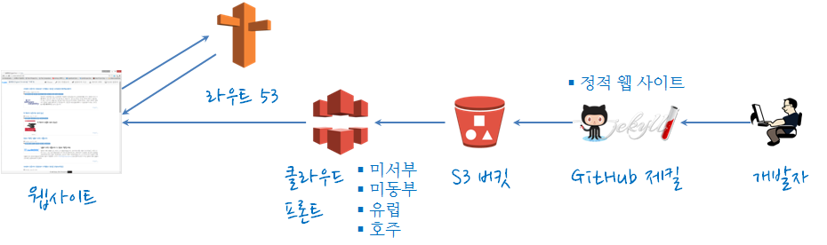
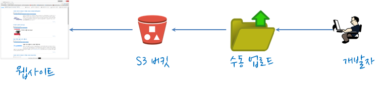
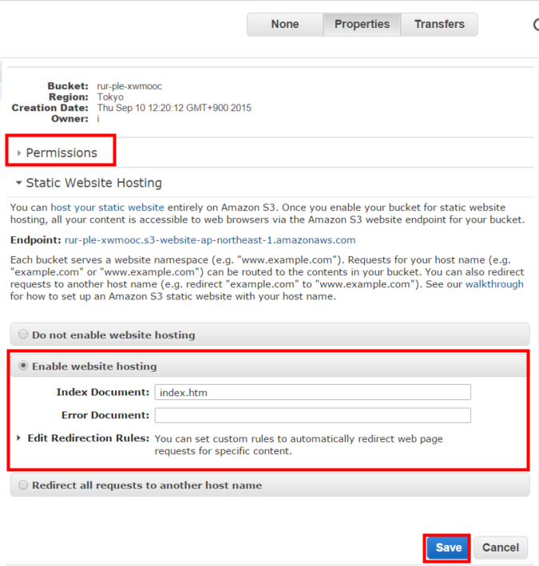
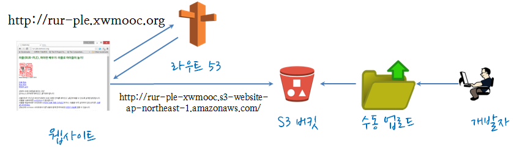

아마존 웹서비스
아마존 웹 서비스 S3에 올리기
학습 목표
- 개발된 정적 웹 서비스를 아마존 웹 서비스 S3에 배포한다.
1. 아마존 웹 서비스를 활용한 정적 웹 서비스
1.1. 정적 웹 서비스 아키텍쳐 (최종)

아마존 웹 서비스를 이용한 정적 웹 사이트 구축 구성요소는 다음과 같다. - 제킬: - GitHub: - S3 버킷: - 클라우드 프론트(CloudFront): - 라우트 53:
2. 순차적 아마존 웹 서비스 구축
2.1. S3를 활용한 정적 웹 서비스 구축
아마존 웹 서비스 중 S3 버킷을 생성해서 환경설정을 바꿔 정적 웹서비스 제공한다. 이를 위해서는 먼저 개발된 정적 웹 서비스가 있어야 된다.

2.1.1. S3 버킷에 index.html 파일을 포함한 정적 웹사이트 서비스를 위한 원데이터를 업로드한다.
2.1.2. S3 버킷을 정적 웹서비스 제공을 위한 환경 설정
- S3 버킷: 권한(Permissions)과 정적 웹사이트 호스팅(Static Website Hosting)에 적절한 설정을 한다.
- 정적 웹사이트 호스팅(Static Website Hosting):
Enable website hosting에index.html파일을 추가한다.  - 권한(Permissions):
Add bucket policy를 클릭하고 기본 정책을 저장한다.- S3 버킷 정책에 대한 자주 사용하는 유형을 아마존 웹 서비스에서 잡아놔서 그중 적합한 것을 골라 사용한다.
- 정적 웹사이트 호스팅(Static Website Hosting):
{
"Version":"2012-10-17",
"Statement":[{
"Sid":"PublicReadGetObject",
"Effect":"Allow",
"Principal": "*",
"Action":["s3:GetObject"],
"Resource":["arn:aws:s3:::example-bucket/*"
]
}
]
}2.2. 사용자 지정 도메인을 정적 웹서비스로 개발된 S3에 정적 웹 사이트에 연결
사용자 구매한 지정 도메인으로 정적 웹서비스로 개발된 S3에 정적 웹 사이트 설정하기 위해서 다음 절차를 거친다.
- 도메인 등록, 만약 도메인이 없다면 다양한 제공업체를 통해서 구입한다.
- S3 버킷 생성과 개발된 정적 웹서비스를 S3 버킷에 올린다.
- 아마존 라우트53 호스팅 영역 생성하고 환경설정한다.
- DNS 서비스를 제공하는 아마존 라우트53으로 설정한다.

라우트53 → 호스트 존(Hosted Zones) 에서 해당 도메인을 선택하고 Go to Record Sets → Create Record Set에서 도메인 명칭과 S3 버킷 설정된 것을 연결한다.
S3 버킷 명칭을 rur-ple.xwmooc.org 으로 설정했으면, Name은 rur-ple, Type은 A - IPv4 address, Alias:는 Yes를 선택하고, Alias Target:은 S3 버킷 명칭을 선택하거나, 복사해서 넣는다.

2.3. 정적 웹 사이트 배포 자동화
제킬로 개발한 정적 웹 사이트를 AWS 파일 업로드 기능을 이용해서 S3 버킷에 업로드해서 올렸다. 변경사항이 발생하거나 신규 기능이 추가될 때 매번 파일을 업로드하는 것은 때로는 시간 낭비일 수 있고 효율적이지 못하다.
s3_website를 사용하면 파일 업로드하는 것을 개발 완료시점에 s3_website push 명령어로 즉시 S3 버킷에 배포할 수 있다.

gem install s3_website명령어로s3_website를 설치한다.gem install을 사용하기 위해서 루비가 사전에 설치되었는지 점검한다.
s3_website cfg create명령어를 실행하면s3_website.yml파일이 생성된다.s3_id,s3_secret,s3_bucket,s3_endpoint를 설정한다.s3_id,s3_secret,s3_bucket정보는 IAM에서 별도 생성된 사용자 정보를 사용한다. Amazon IAM user creation for single S3 bucket access을 참조해서 보안을 강화한다.s3_endpoint는 S3 버킷이 배포된 지역정보(Region)를 사용한다.
s3_id=AKFKSKSDK8DSDSMFJA
s3_secret=0fsd0fdsf0sd9f0fs0dBKmG6BfOVPYoHs
s3_bucket=rur-ple.xwmooc.org
s3_endpoint: us-east-1s3_website push --dry-run명령어로 설정의 완전성을 사전에 확인한다.s3_website push명령어로 AWS S3 버킷에 제킬로 생성된_site정적 웹 서비스를 밀어 넣는다.
xwmooc@xwmooc-VirtualBox:~/rur-ple$ ls -al
total 16
drwxrwxr-x 3 xwmooc xwmooc 4096 9월 12 00:27 .
drwxr-xr-x 24 xwmooc xwmooc 4096 9월 12 00:26 ..
-rw-r--r-- 1 xwmooc xwmooc 1367 9월 12 00:26 s3_website.yml
drwxrwxr-x 11 xwmooc xwmooc 4096 9월 12 00:27 _site